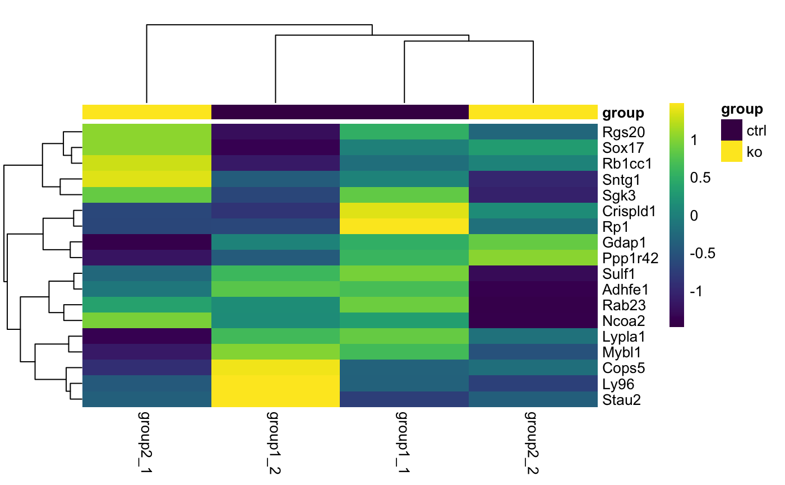
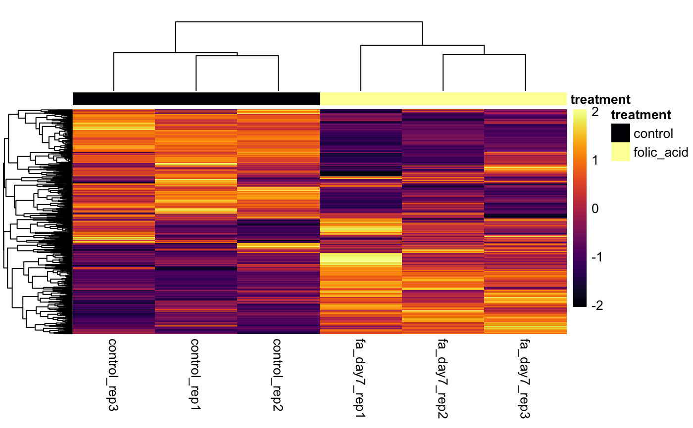
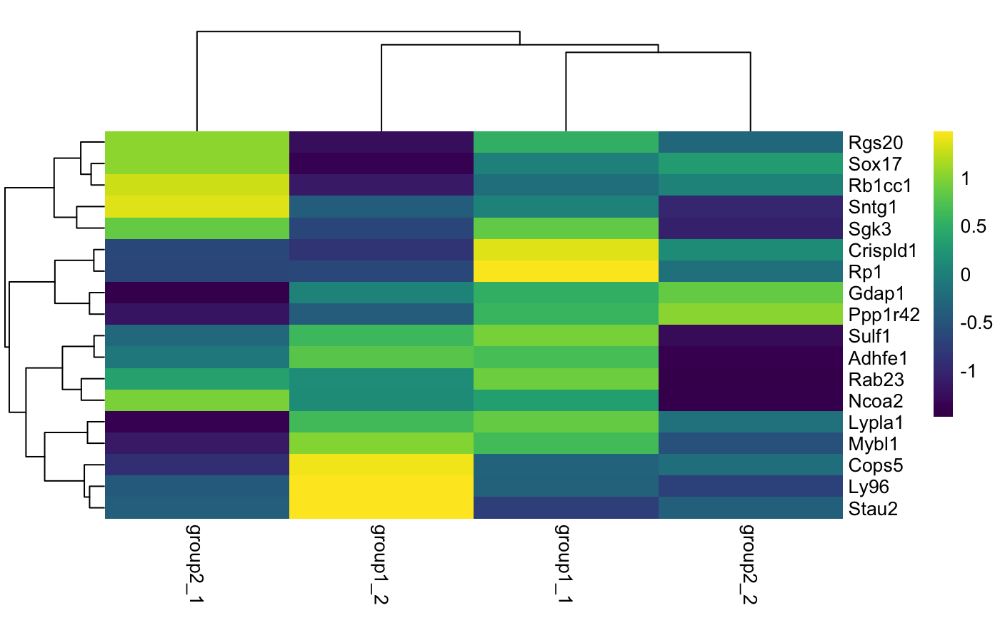
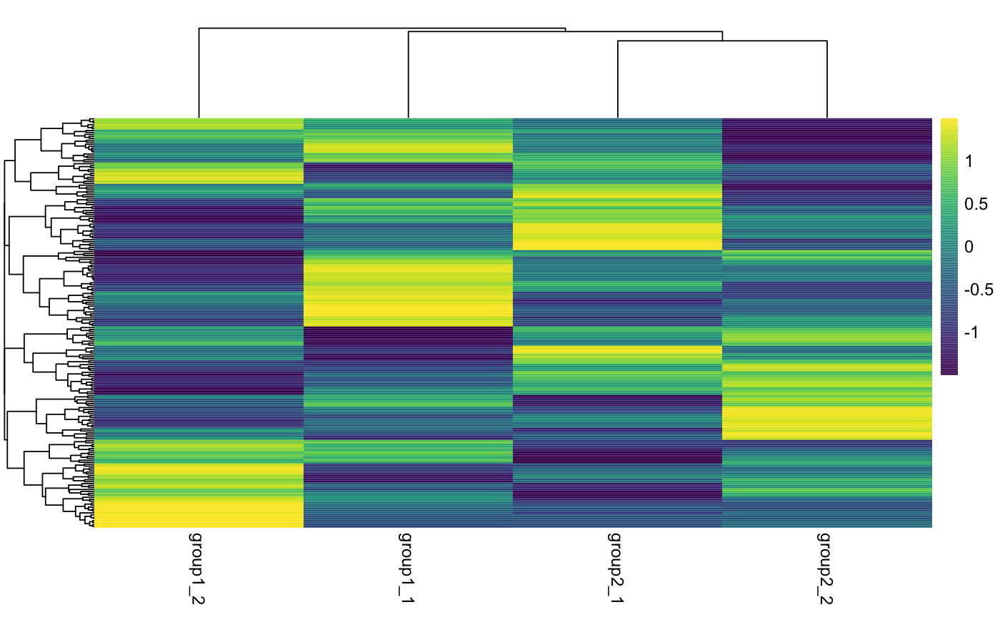

Plot Heatmap
Plot Heatmap
# S4 method for bcbioRNASeq plotHeatmap(object, normalized = "rlog", samples = NULL, genes = NULL, scale = "row", color = viridis::viridis(256), legendColor = viridis::viridis, title = NULL, ...) # S4 method for DESeqDataSet plotHeatmap(object, normalized = TRUE, samples = NULL, genes = NULL, gene2symbol = FALSE, annotationCol = NULL, scale = "row", color = viridis::viridis(256), legendColor = viridis::viridis, title = NULL, ...) # S4 method for DESeqTransform plotHeatmap(object, genes = NULL, gene2symbol = FALSE, annotationCol = NULL, scale = "row", color = viridis::viridis(256), legendColor = viridis::viridis, title = NULL, ...)
Arguments
| object | Object. |
|---|---|
| normalized | Select raw counts (
|
| samples | Optional. Samples (colnames) to plot. |
| genes | Optional. Gene identifiers (rownames) to plot. These must be the stable identifiers (e.g. ENSG00000000003) used on Ensembl and not the gene symbols. |
| scale | Character indicating if the values should be centered and scaled in either the row direction or the column direction, or none. Corresponding values are "row", "column" and "none". |
| color | Desired ggplot color scale. Defaults to
|
| legendColor | Colors to use for legend labels. Defaults to the
|
| title | Include plot title. |
| ... | Additional arguments (for the S4 generic definition). |
| gene2symbol | Apply gene identifier to symbol mappings. If set |
| annotationCol | Optional. data.frame that defines annotation mappings for the columns. |
Details
When column clustering is disabled, the columns are sorted by the interesting
groups (interestingGroups) specified in the bcbioRNASeq and then the
sample names.
See also
Other Heatmaps: plotCorrelationHeatmap,
plotDEGHeatmap
Examples
load(system.file( file.path("extdata", "bcb.rda"), package = "bcbioRNASeq")) # Use Ensembl identifiers to define genes ensgene <- rownames(bcb)[1:20] plotHeatmap(bcb, genes = ensgene)# Use inferno color palette plotHeatmap( bcb, genes = ensgene, color = viridis::inferno(256), legendColor = viridis::inferno)# Transcriptome heatmap with default pheatmap colors plotHeatmap( bcb, color = NULL, legendColor = NULL)# DESeqDataSet dds <- bcbio(bcb, "DESeqDataSet") plotHeatmap(dds)# DESeqTransform rld <- assays(bcb)[["rlog"]] plotHeatmap(rld)